Garrucha
La elección de este elemento se justifica mediante la necesidad de transportar el baúl de manera fácil de un punto hacia otro ya que las personas que lo van a utilizar son adultos mayores en su mayoría de tiempo debido a que van a jugar con esos elementos. Cabe mencionar, según National Institute on Aging, que esta ventaja ocasionará que los adultos puedan mover estos baúles y así fomentar también la actividad física, lo cual aumenta la frecuencia cardíaca y respiratoria permitiéndoles estar saludables, mejorar su estado físico y realizar cualquier actividad. Además, viéndolo desde el punto práctico y de acuerdo a la información que brinda Emuca, el empleo de garruchas en este tipo de mueble facilita que un espacio pueda ser utilizado de varias formas sin necesidad de emplear mucho esfuerzo físico, se evita un impacto fuerte en la espalda, y tiempo (puntos claves para este lugar).
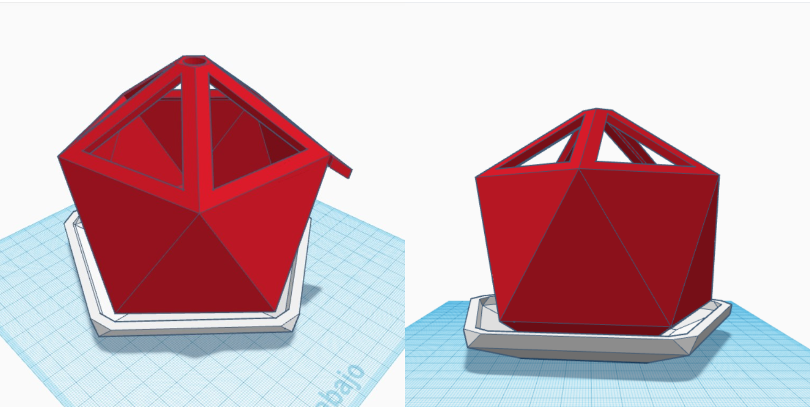Baúl #1
La elección de este baúl se debe principalmente por la forma debido a que refleja lo orgánico, por ende a la naturaleza, al cuerpo humano y a la armonía según Adriana de la Garza. Estas características motivan a la persona a seguir viviendo de manera plena y sana ya que estimula bastante a la salud mental. Otra arista importante es la cantidad de pliegues que tiene la figura, tanto en el cuerpo como en la tapa, y esto permite que los ancianos utilicen más el tacto debido a la forma poco convencional. Mediante el libro Touch de la autora Tiffany Field, se puede conocer que una persona de 80 años en promedio tiene la cuarta parte de los detectores de tacto en relación a una persona de 20 años. Esta pérdida puede causar una afección a la calidad de vida de la persona, es por eso que se busca contrarrestar este mal mediante estas figuras. Lo irónico de este mal es que mientras uno pierde la sensibilidad al tacto, más requiere de sentir texturas distintas o superficies para no perder el hábito, justamente se busca evocar esa forma de practicar el tacto mediante formas llamativas u orgánicas porque a veces uno da por sentado algo cuando se vuelve rutinario como una forma o superficie rígida o cuadriculada.
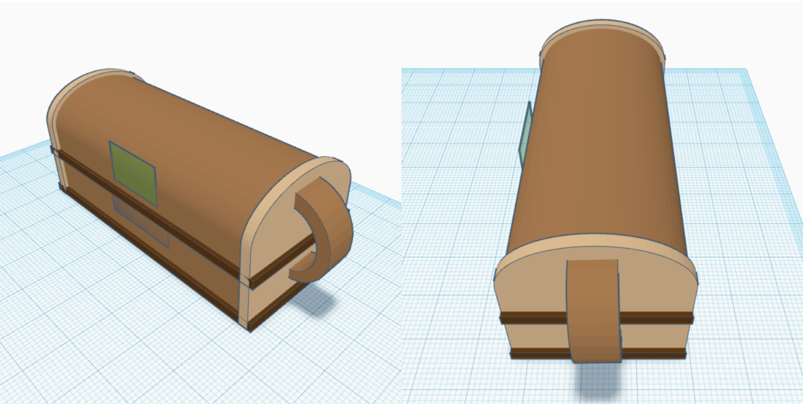Baúl #2
La elección de este diseño es porque será mucho más fácil para los adultos mayores poder manipularlo por sí mismos, su forma curva será amigable debido a que a esa edad su piel se vuelve más sensible. Tendrá unas asas para que puedan agarrarlo con sus dos manos.
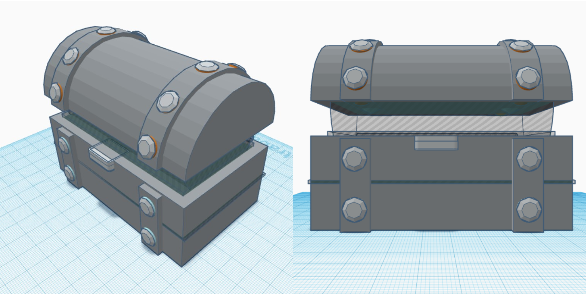Baúl #3
La elección de este diseño en forma de baúl de la temática de búsquedas de tesoros es para que sea más interactivo y emocionante a la hora de que ellos estén jugando con los baúles. Además, será ergonómico para mejor el agarre por lo mismo que los adultos mayores tienen la piel más delgada.
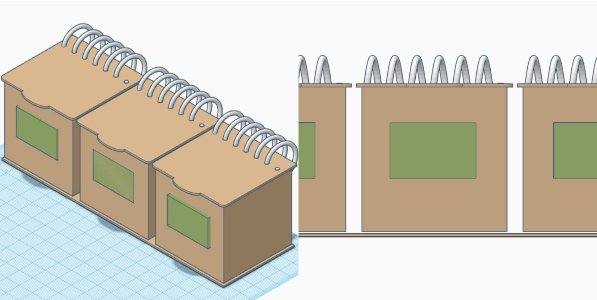Baúl #4
Este diseño es simple de usar debido a que está compuesta por tres cajas que se unen mediante anillos espiralados, por lo que no hay forma de que se separen o se pierdan. El mecanismo de apertura es fácil de usar y tendrán orificios para poder observar lo que hay dentro.
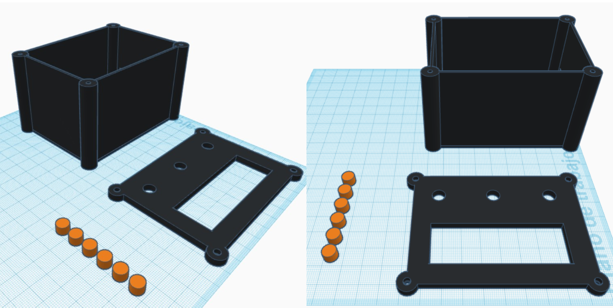Baúl #5
El diseño de este baúl es práctico, simple y fácil de usar para una persona cuyas habilidades motoras ya no son lo suficientemente buenas. Se harán botones que estén a la vista para el fácil acceso y esto los acercará a este tipo de tecnología de una forma más rápida y didáctica.
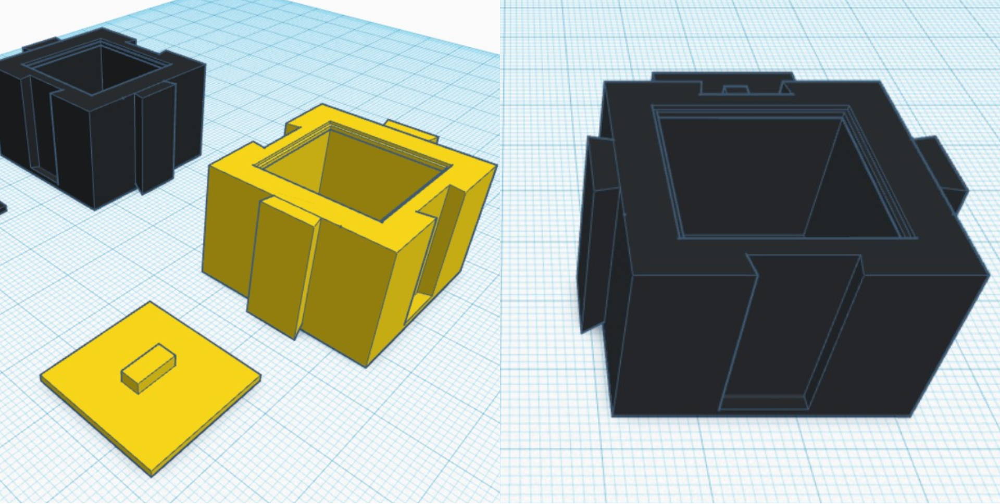Baúl #6
Este baúl presenta un diseño disruptivo debido a que no estamos acostumbrados a asociar la imagen con un baúl convencional, de tal modo que se encuentran dos figuras cuya estética es innovadora teniendo la función de encajar una con otra haciendo alusión en completar el engranaje. Con relación a nuestro público sirve para estimular el sistema nervioso en los adultos mayores y recomponer las capacidades cognitivas.
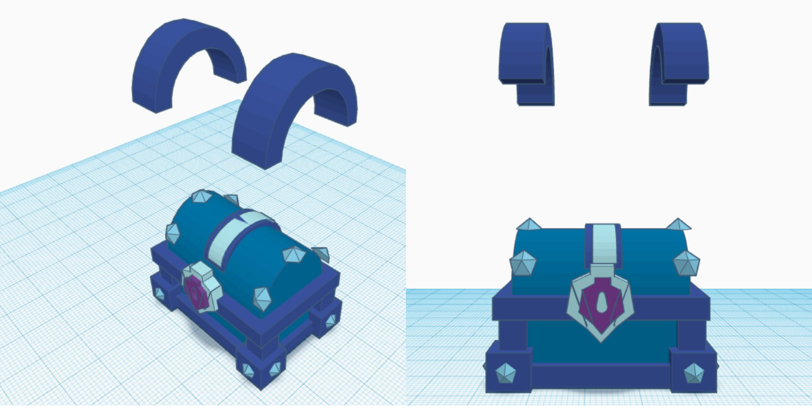Baúl #7
Este baúl cuenta con un diseño atractivo visualmente en el que por medio de los detalles se valoriza a nivel visual. Es asi que sus asas tiene la función de sujetadores para brindarle la movilidad al objeto. Por otro lado, los usuarios tienden a tener una familiaridad con las funciones básicas de este diseño siendo útil y amigable para conocer el funcionamiento.
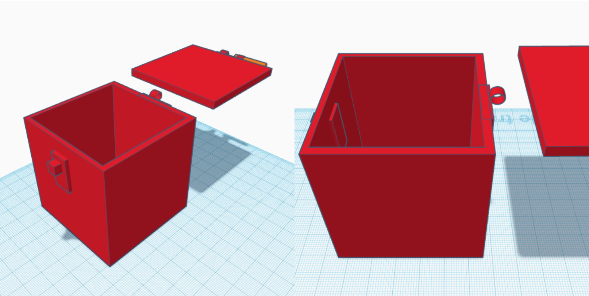Baúl #8
La idea de que sea una caja es simple, que se pueda abrir y la forma cuadrada de la caja es con la finalidad de que parezca un caja de regalo que al desbloquear el seguro se pueda obtener el premio que lleva dentro.
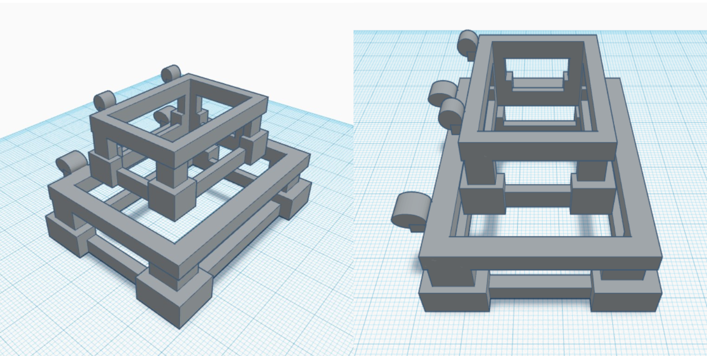Baúl #9
En este vemos como serian las dos estructuras centrales, huecas o caladas, que conformaria parte de nuestro diseño, el cual queremos que sea calada para crear premura por poder ver que hay dentro del baúl.
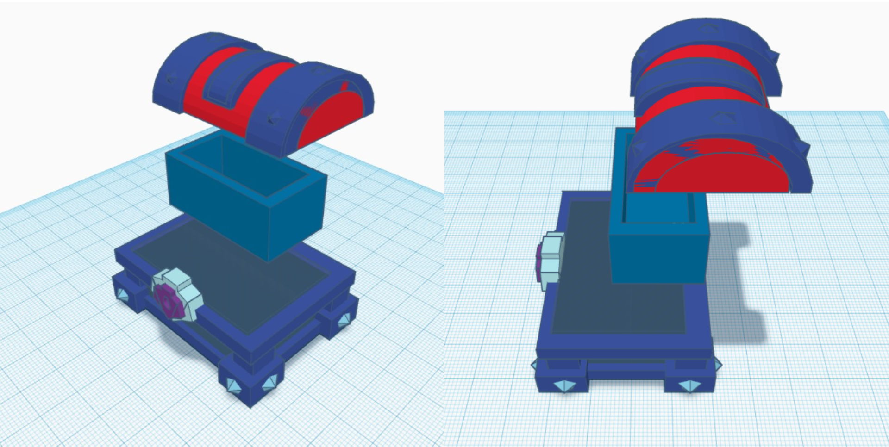Baúl #10
Refleja como sería el armazón de nuestro baúl conformado por dos estructuras centrales y la tapa. El hecho de que sean dos estructuras centrales sería para jugar a resolver acertijos que ayuda a prevenir la perdida de funciones cognitivas relacionadas con la edad al resolver este desafio mental. Esto se trata de abrir las dos estructuras centrales como parte del acertijo incluida la recompensa de haber decifrado o en este caso haber abierto los cofres.
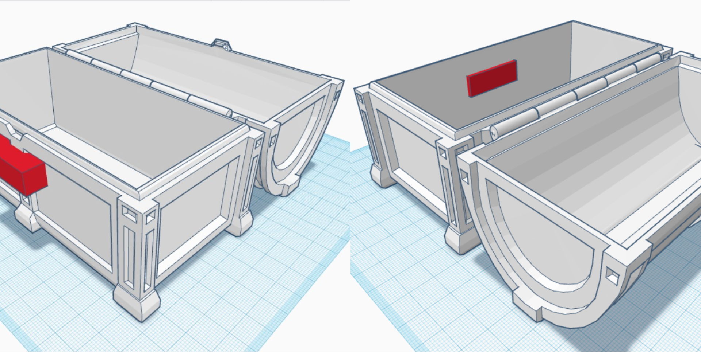Baúl #11
El diseño de cofre es una forma clásica de presentar nuestro proyecto ya que de por sí estos cuentan con seguro debido a que en su interior hay un objeto de valor y la idea es fomentar la curiosidad de saber cuál es la recompensa al abrirlo.